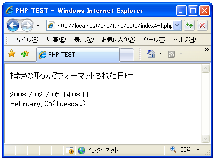

指定の形式にフォーマットされた日時を取得(strftime)
広告
現在の日時または指定したタイムスタンプの値を、指定した形式にフォーマットした結果を取得する方法を確認します。「strftime」関数を使います。
strftime string strftime ( string $format [, int $timestamp ] )
指定した timestamp または timestamp が指定されていない場合に現在のローカ ル時間を用いて、指定したフォーマット文字列に基づき文字列をフォーマットし て返します。月および曜日の名前、およびその他の言語依存の文字列は、 setlocale() で設定された現在のロケールを尊重して表示されます。 引数： $format フォーマット形式(詳細は後述) $timestamp 対象となるタイムスタンプ 返り値： フォーマットされた日時
1番目の引数に指定したフォーマット形式を使って現在の日時をフォーマットした結果を文字列として取得します。2番目の引数を指定した場合は現在の日時ではなく引数に指定したタイムスタンプの値を対象とします。
フォーマット形式は文字列の中に変換指定子と呼ばれるものを組み合わせて指定します。変換指定子は次のようなものが用意されています。
%a - 現在のロケールに基づく短縮された曜日の名前
%A - 現在のロケールに基づく完全な曜日の名前
%b - 現在のロケールに基づく短縮された月の名前
%B - 現在のロケールに基づく完全な月の名前
%c - 現在のロケールに基づく適当な日付と時間の表現
%C - 世紀 (年を 100 で割り、整数に丸めたもの。00 から 99)
%d - 日付を 10 進数で (01 から 31)。
%D - %m/%d/%y と同じ
%e - 月単位の日付を 10 進数で表したもの。日付が 1 桁の場合は、前に空白
を一つ付けます (' 1' から '31')。
%g - 世紀以外は %G と同じ。
%G - ISO 週番号 (%V を参照) に対応する 4 桁の年。これは ISO 週番号が前
年もしくは次年に属するかによって使用される年が異なる事を除き %Y と
同じフォーマットと値です。
%h - %bと同じ。
%H - 時間を 24 時間表示の 10 進数で (00 から 23 まで)。
%I - 時間を 12 時間表示の 10 進数で (01 から 12 まで)。
%j - 年間での日付を 10 進数で表現 (001 から 366)。
%m - 月を 10 進数で表現 (01 から 12)。
%M - 分を 10 進数で表現。
%n - 改行文字。
%p - 指定した時間により `am' または `pm'、または現在のロケールの、それ
に対応する文字列。
%r - a.m. および p.m. 表記で表した時間。
%R - 24 時間表記で表した時間。
%S - 秒を 10 進数で表現。
%t - タブ文字。
%T - 現在の時間。%H:%M:%S に等しい。
%u - 10 進数表記の曜日。1 から 7 の範囲で表し、1 が月曜日。
%U - 年間で何番目の週であるかを 10 進数で表現。年間で最初の日曜を最初の
週の最初の日として数えます。
%V - ISO 8601:1988 で規定された現在の年の週番号の 10 進数表現で、01 か
ら 53 までの範囲となります。1 は最初の週で、その週は現在の年に最低
4 日はあります。週は月曜日から始まります (指定したタイムスタンプの
週番号に対応する年を表すには、%G あるいは %g をしてください)。
%W - 現在の年で何番目の週であるかを 10 進数で表現。 年間で最初の月曜を
最初の週の最初の日として数えます。
%w - 曜日を 10 進数で表現。日曜は 0 になります。
%x - 時間を除いた日付を現在のロケールに基づき表現します。
%X - 日付を除いた時間を現在のロケールに基づき表現します。
%y - 世紀の部分を除いた年を10進数として表現 (00 から 99 までの範囲)。
%Y - 世紀を含む年を 10 進数で表現。
%Z あるいは %z - タイムゾーンまたはその名前または短縮形。
%% - 文字リテラル`%'。
数多くの変換指定子がありますが、必要な変換指定子を選んで組み合わせ文字列と合わせて利用します。例えば次のように記述します。
$str = strftime("%Y / %m / %d %H:%M:%S");
サンプルプログラム
では簡単なサンプルで試して見ます。
<html>
<head><title>PHP TEST</title></head>
<body>
<p>指定の形式でフォーマットされた日時</p>
<?php
print(strftime("%Y / %m / %d %H:%M:%S").'<br>');
print(strftime("%B, %d(%A)").'<br>');
?>
</body>
</html>
上記ファイルをWWWサーバに設置しブラウザ経由で見ると下記のように表示されます。

( Written by Tatsuo Ikura )
Profile

著者 / TATSUO IKURA
初心者～中級者の方を対象としたプログラミング方法や開発環境の構築の解説を行うサイトの運営を行っています。